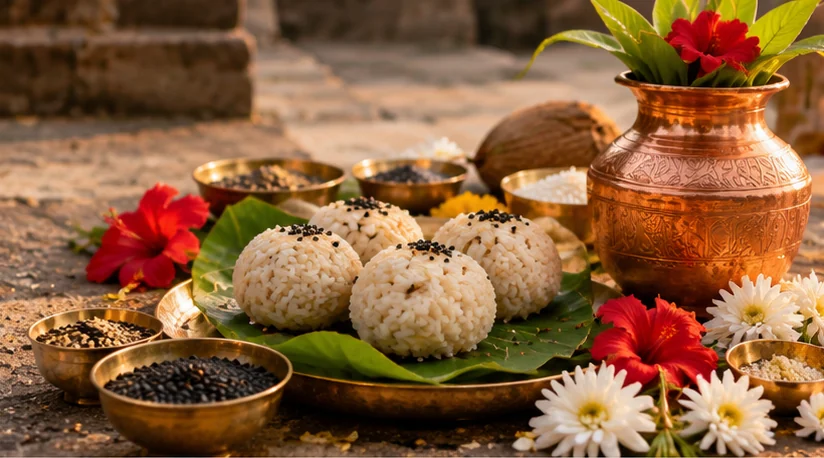
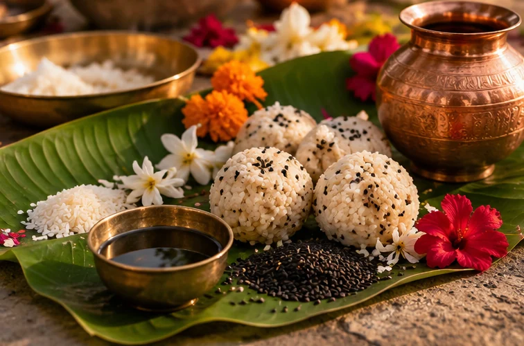
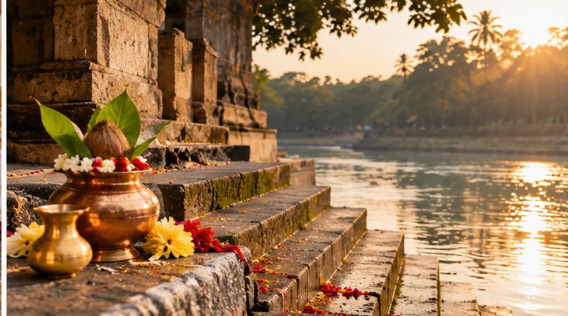
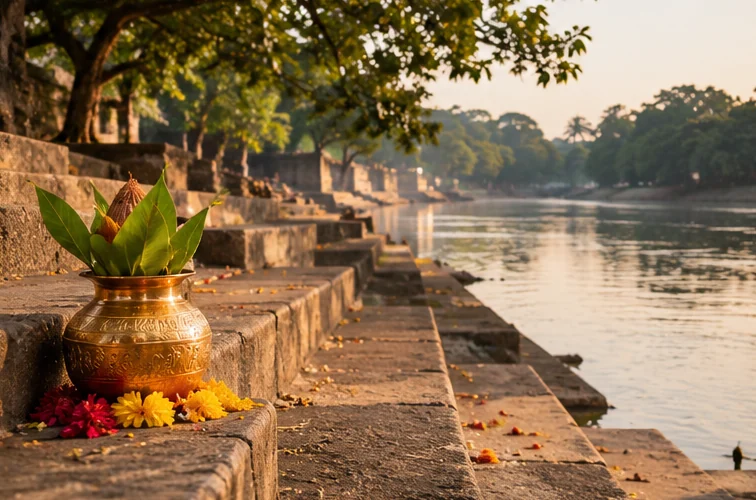
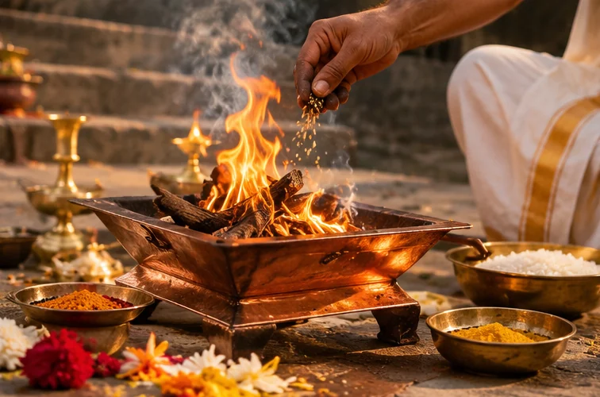

Pitru & Ancestral
Moksha Narayana Bali
An ancestral rite traditionally performed to pray for peace for departed souls.
View details →Find the service you are looking for and contact the Pandit to confirm the appropriate ceremony and arrangements.
Explore the 15 poojas offered at Gosai Ghat, Srirangapatna.
An ancestral rite traditionally performed to pray for peace for departed souls.
View details →
A traditional rite through which families seek their ancestors’ blessings.
View details →
Prayers and offerings for the peace of departed ancestors.
View details →
Rice-ball offerings traditionally made during Shraddha to honour ancestors.
View details →
A Vedic fire ritual with sesame offerings in honour of ancestors.
View details →


Traditional rites conducted for a person who has passed away.
View details →
A traditional prayer ritual associated with Sarpa Dosha.
View details →
A Vedic rite traditionally associated with Sarpa Dosha.
View details →
A Shanti pooja associated with Dhanishta (Danista) Nakshatra.
View details →
A traditional Shanti observance linked to Tripadi Nakshatra.
View details →

A symbolic marriage ritual traditionally involving a banana plant.
View details →No services found for this category.
Speak directly with the Pandit about the right ritual, suitable date and arrangements.
Get directions and visit information →